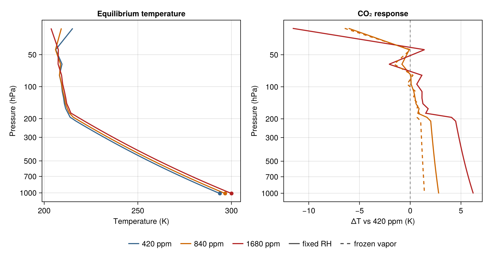

Manabe-style radiative-convective equilibrium
Manabe and Wetherald (1967, J. Atmos. Sci., doi: 10.1175/1520-0469(1967)024<0241:TEOTAW>2.0.CO;2) computed the temperature of an atmospheric column in radiative-convective equilibrium: radiation heats and cools each layer, and wherever radiation would leave the column steeper than a critical lapse rate, convection instantly restores it. Two of their choices made the calculation famous — holding relative humidity fixed, so water vapor rises and falls with temperature, and asking how the equilibrium surface temperature responds to doubled CO₂.
This page runs a Manabe-style version of that calculation with the staged ecCKD runtime. It is not a numerical reproduction of Manabe and Wetherald's result: the radiation is modern correlated-k gas optics rather than their band model, the sky is clear, the ozone profile is idealized, insolation is a prescribed global-mean value, and the surface is a slab. Every response measured here is an outcome of this configuration, not a canonical sensitivity.
using NumericalRadiation
using NCDatasets # NetCDF reader extension (ecCKD files)
using PrintfThe model column and its fixed ingredients
All parameters of the configuration, stated plainly. Physical constants carry their mathematical symbols: gravity $g$, heat capacity $c_p$, the Stefan-Boltzmann constant $σ$, the dry-air gas constant $R^d$, and the dry-air and water molar masses $m^d$ and $m^v$:
g = 9.80665 # m s⁻²
cₚ = 1004 # J kg⁻¹ K⁻¹
σ = 5.670374419e-8 # W m⁻² K⁻⁴
Rᵈ = 287.05 # J kg⁻¹ K⁻¹
mᵈ = 0.028964 # kg mol⁻¹
mᵛ = 0.018016 # kg mol⁻¹
day = 86_400 # s86400The Manabe-Wetherald ingredients: critical lapse rate $Γ$, prescribed global-mean insolation $S_0$ at zenith cosine $μ_0$, surface albedo $α$, and a surface slab of heat capacity $C_s$:
Γ = 6.5e-3 # K m⁻¹
S₀ = 340.25 # TOA downwelling shortwave flux, W m⁻²
μ₀ = 0.5
α = 0.22 # crude stand-in for a cloud-free planet
Cₛ = 1e7 # J m⁻² K⁻¹
surface_relative_humidity = 0.77 # Manabe-Wetherald profile parameter
water_vapor_floor = 5e-6 # stratospheric water-vapor floor5.0e-6The column: $N$ layers with interface pressures $pᵢ$ from 20 hPa down to the surface pressure $pₛ$, layer pressures $p$ at their midpoints, and an idealized ozone dry-air mole fraction $χ_{O₃}(p)$:
N = 60
pₛ = 101_325
pᵢ = collect(range(2_000, pₛ; length = N + 1))
p = 0.5 .* (pᵢ[1:end-1] .+ pᵢ[2:end])
χO₃ = @. 3e-8 + 5e-6 * (2_000 / p)The gas-optics model is read once and shared by every run. The full published gas set is activated; CH₄, N₂O, and the CFCs are then given zero amounts, which — because activating a gas subtracts its reference contribution from the composite background — removes them from the atmosphere entirely. The greenhouse gases here are H₂O, O₃, and CO₂, plus the O₂/N₂ composite continuum, matching the spirit of Manabe and Wetherald's gas set.
gas_optics = read_official_ecckd_gas_optics("32x32";
names = (:composite, :h2o, :o3, :co2, :ch4, :n2o, :cfc11, :cfc12))Water vapor follows Manabe and Wetherald's fixed-relative-humidity profile $h(p) = 0.77\,(p/p_s - 0.02)/0.98$ with a Magnus saturation vapor pressure and a stratospheric floor; $χ_{H₂O}$ is the dry-air mole fraction. Because the relative humidity is fixed, the vapor is recomputed from the temperature at every step — this is the water-vapor feedback.
saturation_vapor_pressure(T) = 610.94 * exp(17.625 * (T - 273.15) / (T - 30.11))
function fixed_relative_humidity!(χH₂O, T)
for k in eachindex(χH₂O)
h = max(surface_relative_humidity * (p[k] / pₛ - 0.02) / 0.98, 0)
eₛ = saturation_vapor_pressure(T[k])
χH₂O[k] = max(h * eₛ / max(p[k] - h * eₛ, 1), water_vapor_floor)
end
return χH₂O
endConvective adjustment
Wherever an adjacent pair of levels — including the surface and the lowest layer — is steeper than the critical lapse rate $Γ$, the pair is relaxed exactly onto it while conserving the pressure-weighted enthalpy (the surface slab contributes its own heat capacity $C_s$). Sweeps repeat until no pair violates the criterion; this is the instantaneous limit of convection, as in Manabe and Wetherald.
layer_heat_capacity = [cₚ * (pᵢ[k + 1] - pᵢ[k]) / g for k in 1:N]
function convective_adjustment!(T, Tₛ)
c = layer_heat_capacity
for _ in 1:200
changed = false
Δz = Rᵈ * 0.5 * (Tₛ + T[N]) / g * log(pᵢ[N + 1] / p[N])
target = Γ * Δz
if Tₛ - T[N] > target + 1e-10
H = Cₛ * Tₛ + c[N] * T[N]
T[N] = (H - Cₛ * target) / (Cₛ + c[N])
Tₛ = T[N] + target
changed = true
end
for k in N-1:-1:1
Δz = Rᵈ * 0.5 * (T[k] + T[k + 1]) / g * log(p[k + 1] / p[k])
target = Γ * Δz
if T[k + 1] - T[k] > target + 1e-10
H = c[k] * T[k] + c[k + 1] * T[k + 1]
T[k + 1] = (H + c[k] * target) / (c[k] + c[k + 1])
T[k] = T[k + 1] - target
changed = true
end
end
changed || break
end
return Tₛ
endWork arrays
The staged runtime writes into caller-owned arrays sized by the g-point counts of the loaded model:
function radiation_work_arrays(gas_optics, N)
longwave_gpoints = length(gas_optics.longwave_weights)
shortwave_gpoints = length(gas_optics.shortwave_weights)
longwave = LongwaveOpticalProperties(zeros(longwave_gpoints, N), zeros(longwave_gpoints, N);
source_top = zeros(longwave_gpoints, N),
source_bottom = zeros(longwave_gpoints, N),
weights = zeros(longwave_gpoints))
shortwave = ShortwaveOpticalProperties(zeros(shortwave_gpoints, N);
rayleigh_optical_depth = zeros(shortwave_gpoints, N),
scattering_asymmetry = zeros(shortwave_gpoints, N),
weights = zeros(shortwave_gpoints))
fluxes = RadiativeFluxes(longwave_up = zeros(N + 1),
longwave_down = zeros(N + 1),
shortwave_up = zeros(N + 1),
shortwave_down = zeros(N + 1))
return longwave, shortwave, fluxes
endTime-marching to equilibrium
Each step: refresh water vapor from the current temperatures, solve radiation through the staged runtime — with the surface emitting its per-g Planck spectrum via surface_longwave_emission, never a gray $σT⁴$ scalar — apply the radiative tendencies and the surface energy budget, then convectively adjust. Convergence is diagnosed from the net state change per day — temperatures after a complete radiative-plus-convective step minus temperatures before it — because the raw radiative tendencies stay large in equilibrium, balanced by the convective flux. The march stops once that residual stays below tolerance for 50 consecutive model days — only then is the returned converged flag true; hitting max_days leaves it false and fails the build gates below. The elapsed model days are returned, and the returned fluxes are recomputed at the final adjusted state.
FT = Float64 # element type where floating-point storage is required
function radiative_convective_equilibrium(χCO₂; T₀ = nothing, Tₛ₀ = 288,
fixed_water_vapor = nothing,
max_days = 3000, Δt = 21_600,
tolerance = 1e-4)
T = T₀ === nothing ? fill(FT(280), N) : copy(T₀)
Tᵢ = zeros(N + 1)
Tₛ = Tₛ₀
χH₂O = zeros(N)
nᵈ = zeros(N)
fixed_relative_humidity!(χH₂O, T)
fixed_water_vapor !== nothing && (χH₂O .= fixed_water_vapor)
gases = (composite = zeros(N), h2o = zeros(N), o3 = zeros(N),
co2 = zeros(N), ch4 = zeros(N), n2o = zeros(N),
cfc11 = zeros(N), cfc12 = zeros(N))
# The evolving surface temperature is supplied to the solver through
# LongwaveBoundaryConditions each step, so the static state carries none.
atmosphere = ColumnAtmosphere(; pressure_layers = p,
pressure_interfaces = pᵢ,
temperature_layers = T,
temperature_interfaces = Tᵢ,
gases,
surface = nothing,
geometry = (cos_zenith = μ₀,))
longwave, shortwave, fluxes = radiation_work_arrays(gas_optics, N)
shortwave_boundary = ShortwaveBoundaryConditions(toa_shortwave_down = S₀,
surface_albedo = α)
Ṫ = zeros(N)
previous_temperature = zeros(N)
solve_radiation!(Tₛ) = begin
for k in 1:N
nᵈ[k] = (pᵢ[k + 1] - pᵢ[k]) / (g * (mᵈ + mᵛ * χH₂O[k]))
gases.composite[k] = nᵈ[k]
gases.h2o[k] = χH₂O[k] * nᵈ[k]
gases.o3[k] = χO₃[k] * nᵈ[k]
gases.co2[k] = χCO₂ * nᵈ[k]
end
for k in 2:N
w = (pᵢ[k] - p[k - 1]) / (p[k] - p[k - 1])
Tᵢ[k] = (1 - w) * T[k - 1] + w * T[k]
end
Tᵢ[1] = T[1]
Tᵢ[end] = T[N] + (T[N] - T[N - 1]) / (p[N] - p[N - 1]) * (pᵢ[end] - p[N])
optical_properties!(longwave, shortwave, gas_optics, atmosphere)
surface_emission = surface_longwave_emission(gas_optics, Tₛ)
radiative_fluxes!(fluxes, CloudlessLongwave(), longwave, atmosphere,
LongwaveBoundaryConditions(surface_longwave_up = surface_emission))
radiative_fluxes!(fluxes, CloudlessShortwave(), shortwave, atmosphere,
shortwave_boundary)
end
residual = Inf
sustained_steps = round(Int, 50day / Δt)
streak = 0
days_elapsed = max_days
converged = false
for step in 1:round(Int, max_days * day / Δt)
fixed_water_vapor === nothing && fixed_relative_humidity!(χH₂O, T)
previous_temperature .= T
previous_surface_temperature = Tₛ
solve_radiation!(Tₛ)
heating_rates!(Ṫ, fluxes, atmosphere; gravity = g, heat_capacity = cₚ)
@. T += Δt * Ṫ
surface_net = fluxes.shortwave_down[end] - fluxes.shortwave_up[end] +
fluxes.longwave_down[end] - fluxes.longwave_up[end]
Tₛ += Δt * surface_net / Cₛ
Tₛ = convective_adjustment!(T, Tₛ)
residual = max(maximum(abs, T .- previous_temperature),
abs(Tₛ - previous_surface_temperature)) / Δt * day
streak = residual < tolerance ? streak + 1 : 0
if streak >= sustained_steps
days_elapsed = step * Δt / day
converged = true
break
end
end
fixed_water_vapor === nothing && fixed_relative_humidity!(χH₂O, T)
solve_radiation!(Tₛ) # fluxes at the final adjusted state
return (; T = copy(T), Tₛ, χH₂O = copy(χH₂O), residual, converged,
days = days_elapsed,
olr = fluxes.longwave_up[1],
asr = fluxes.shortwave_down[1] - fluxes.shortwave_up[1])
endFour equilibria
A baseline at 420 ppm CO₂ spun up from a physically motivated initial state — a capped lapse-rate profile — then doubled and quadrupled CO₂ warm-started from the baseline, and — following Manabe and Wetherald's discriminating experiment — a doubled-CO₂ run with the water vapor frozen at the baseline field, which removes the feedback. The initialization is disclosed because equilibrium uniqueness is not proven; during development an isothermal start converged to the same state on this configuration, but the published calculation pins the lapse start. Every returned state must beat verified convergence gates — including a tropospheric inversion-limit check (adjacent-layer cooling with depth no stronger than a small numerical tolerance) — or the page fails to build:
tolerance_gate = 1e-3 # K day⁻¹, post-adjustment residual
imbalance_gate = 0.1 # W m⁻², |ASR − OLR| at the returned state
initial_temperature = clamp.(288 .- 65 .* (1 .- (p ./ pₛ) .^ 0.286), 200, 288)
base = radiative_convective_equilibrium(420e-6; T₀ = initial_temperature)
doubled = radiative_convective_equilibrium(840e-6; T₀ = base.T, Tₛ₀ = base.Tₛ)
quadrupled = radiative_convective_equilibrium(1680e-6; T₀ = base.T, Tₛ₀ = base.Tₛ)
frozen = radiative_convective_equilibrium(840e-6; T₀ = base.T, Tₛ₀ = base.Tₛ,
fixed_water_vapor = base.χH₂O)
for (name, r) in (("baseline", base), ("2×", doubled),
("4×", quadrupled), ("2× frozen-q", frozen))
@assert r.converged "$name: never sustained residual < tolerance for 50 days"
@assert r.residual < tolerance_gate "$name: residual $(r.residual) K/day above gate"
@assert abs(r.asr - r.olr) < imbalance_gate "$name: TOA imbalance $(r.asr - r.olr) W/m²"
inversion_limit = minimum(diff(r.T)[p[1:end-1] .> 40_000])
@assert inversion_limit > -0.05 "$name: tropospheric inversion-limit gate: $(inversion_limit) K per layer"
end
weighted_emission = sum(gas_optics.longwave_weights .*
surface_longwave_emission(gas_optics, base.Tₛ))
@assert abs(weighted_emission - σ * base.Tₛ^4) < 0.2
@printf("weighted surface emission: %.3f W m⁻² (σTₛ⁴ = %.3f)\n",
weighted_emission, σ * base.Tₛ^4)
@printf("baseline (420 ppm): Tₛ = %7.2f K TOA imbalance (ASR − OLR) = %+.3f W m⁻²\n",
base.Tₛ, base.asr - base.olr)
@printf(" converged in %.0f model days; final residual %.1e K day⁻¹\n",
base.days, base.residual)
@printf("2× CO₂, fixed RH: Tₛ = %7.2f K ΔTₛ = %+.2f K\n",
doubled.Tₛ, doubled.Tₛ - base.Tₛ)
@printf("4× CO₂, fixed RH: Tₛ = %7.2f K ΔTₛ = %+.2f K\n",
quadrupled.Tₛ, quadrupled.Tₛ - base.Tₛ)
@printf("2× CO₂, frozen vapor: Tₛ = %7.2f K ΔTₛ = %+.2f K\n",
frozen.Tₛ, frozen.Tₛ - base.Tₛ)weighted surface emission: 422.691 W m⁻² (σTₛ⁴ = 422.722)
baseline (420 ppm): Tₛ = 293.84 K TOA imbalance (ASR − OLR) = -0.013 W m⁻²
converged in 795 model days; final residual 6.4e-05 K day⁻¹
2× CO₂, fixed RH: Tₛ = 296.65 K ΔTₛ = +2.81 K
4× CO₂, fixed RH: Tₛ = 300.06 K ΔTₛ = +6.22 K
2× CO₂, frozen vapor: Tₛ = 295.24 K ΔTₛ = +1.40 K
The comparison Manabe and Wetherald made famous is the contrast between the fixed-relative-humidity and frozen-vapor doublings: letting water vapor rise with temperature amplifies the surface response, and the measured amplification here is the ratio of those two printed numbers. For context — not as targets — Manabe and Wetherald reported roughly 2–3 K for doubled CO₂ depending on cloud treatment, and a modern RRTMGP.jl radiative-convective calculation (CliMA blog) reports 2.9 K. The response measured above falls in that historically reported range, but those calculations differ from this one in radiation scheme, gas set, insolation, albedo, and cloud treatment, so the numbers remain an outcome of this configuration rather than a reproduction; the correlated-k model spread page reports the package's separate fixed-column measurement of the correlated-k implementation spread.
The equilibrium and its response
In the right panel, color encodes the CO₂ level and line style the humidity treatment, so the discriminating frozen-vapor experiment is visible next to the fixed-relative-humidity responses.
using CairoMakie
fig = Figure(size = (900, 480))
pressure_ticks = [20, 50, 100, 200, 300, 500, 700, 1000]
ax1 = Axis(fig[1, 1]; xlabel = "Temperature (K)", ylabel = "Pressure (hPa)",
yscale = log10, yreversed = true,
yticks = (pressure_ticks, string.(pressure_ticks)),
title = "Equilibrium temperature")
lines!(ax1, base.T, p ./ 100; color = :steelblue4, linewidth = 2)
lines!(ax1, doubled.T, p ./ 100; color = :darkorange3, linewidth = 2)
lines!(ax1, quadrupled.T, p ./ 100; color = :firebrick, linewidth = 2)
scatter!(ax1, [base.Tₛ, doubled.Tₛ, quadrupled.Tₛ], fill(pₛ / 100, 3);
color = [:steelblue4, :darkorange3, :firebrick], markersize = 10)
ax2 = Axis(fig[1, 2]; xlabel = "ΔT vs 420 ppm (K)", ylabel = "Pressure (hPa)",
yscale = log10, yreversed = true,
yticks = (pressure_ticks, string.(pressure_ticks)),
title = "CO₂ response")
vlines!(ax2, [0]; color = (:black, 0.4), linestyle = :dash)
lines!(ax2, doubled.T .- base.T, p ./ 100;
color = :darkorange3, linewidth = 2)
lines!(ax2, quadrupled.T .- base.T, p ./ 100;
color = :firebrick, linewidth = 2)
lines!(ax2, frozen.T .- base.T, p ./ 100;
color = :darkorange3, linewidth = 2, linestyle = :dash)
legend_entries = [LineElement(color = :steelblue4, linewidth = 2),
LineElement(color = :darkorange3, linewidth = 2),
LineElement(color = :firebrick, linewidth = 2),
LineElement(color = :gray30, linewidth = 2, linestyle = :solid),
LineElement(color = :gray30, linewidth = 2, linestyle = :dash)]
Legend(fig[2, 1:2], legend_entries,
["420 ppm", "840 ppm", "1680 ppm", "fixed RH", "frozen vapor"];
orientation = :horizontal, framevisible = false)

The left panel shows the three fixed-relative-humidity equilibria: a troposphere bounded by the critical lapse rate over a slab surface (surface temperatures marked at the bottom axis), a tropopause, and a stratosphere in radiative equilibrium. The right panel shows the response structure: CO₂ cools the stratosphere while the troposphere warms, with the crossover near the tropopause — the vertical signature Manabe and Wetherald first computed — and the dashed frozen-vapor doubling shows how much of the tropospheric response the water-vapor feedback carries. All panels are this configuration's measured response; none is a reproduction of any published sensitivity.
This page was generated using Literate.jl.